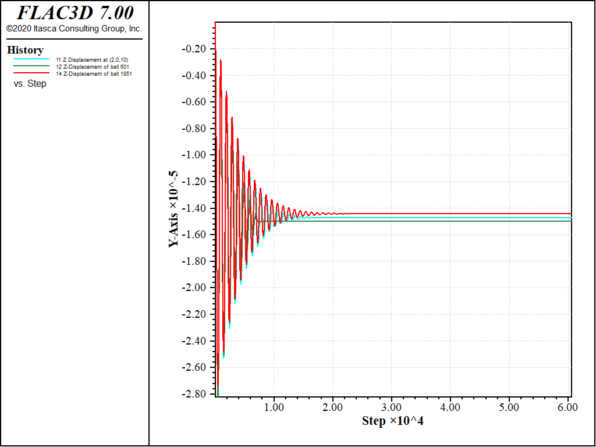
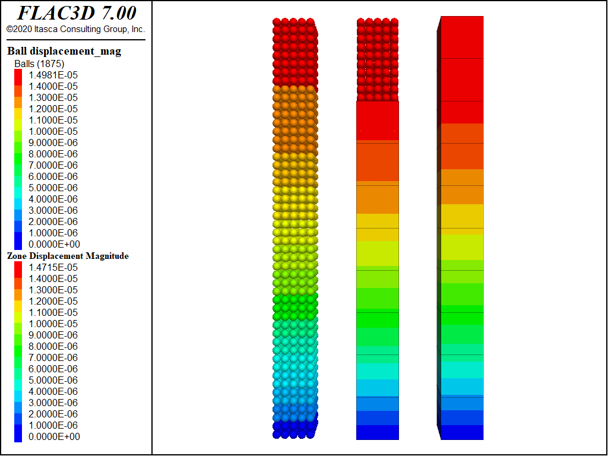

耦合 PFC-FLAC3D 模型中的重力沉降
问题描述
注意
要在程序中查看本项目，请使用菜单命令 。选择“—————/ ————–”，再选择“——-.—-”以载入。 所用的主数据文件（data file）见本算例末尾。其余数据文件可在项目中找到。
下例说明采用 PFC-FLAC3D 耦合时竖直柱体中的重力沉降。柱体上部由相互黏结的颗粒组成，下部由网格单元组成。底端为固定边界。PFC 与 FLAC3D 区域在指定长度范围内重叠，二者在该范围内采用球体-网格单元耦合方案（Ball-Zone coupling scheme）进行耦合。开启重力后，将系统求解至平衡。
将耦合系统的行为与仅由球体组成的类似系统（仅 PFC 模型）以及仅由网格单元组成的系统（仅 FLAC3D 模型）进行对比。三个系统在同一模型中并排运行。
数值模型
数据文件“settle_cpl.dat”模拟由耦合 PFC-FLAC3D 系统构成的柱体中的重力沉降。 系统顶部的竖向位移见


图 1：位移时程。


图 2：位移等值线。
数据文件
settle_cpl.dat
model new
model configure dynamic
model large-strain on
[rho = 2700.0 ]
[emod = 75.0e9 ]
[nu = 0.25]
[mmod = emod*(1-nu)/((1+nu)*(1-2.0*nu))]
[l = 1.0]
[nb = 5]
[rad = l/(2.0*nb)]
[rhob = 6.0/math.pi*rho]
[nh = 10]
[nw = 1]
[npfc = 2]
[ncpl = 3]
[h = nh*l]
[nf3d = nh - (npfc+ncpl)]
;[lsub = nzh*hz]
[hmin = 0.]
[hpfc = hmin + nf3d *l]
[hf3d = hmin + (nf3d+ncpl)*l]
[nf = int(hf3d/l)]
[epsilon = 1.0e-3]
zone create brick size [nw] [nw] [nf] point 0 0 0 [hmin] ...
point 1 [l] 0 [hmin] ...
point 2 0 [l] [hmin] ...
point 3 0 0 [hf3d]
zone create brick size [nw] [nw] [nh] point 0 [2.0*l] 0. [hmin] ...
point 1 [3.0*l] 0. [hmin] ...
point 2 [2.0*l] [l] [hmin] ...
point 3 [2.0*l] 0. [h]
zone cmodel assign elastic
zone property young [emod] poisson [nu]
zone initialize density [rho]
model cycle 0 ; 以初始化网格点质量
model range create 'bottom' position-z [hmin-0.01*l] [hmin+0.01*l]
zone face group 'bottom' range named-range 'bottom'
zone gridpoint fix velocity range named-range 'bottom'
zone gridpoint fix velocity-x
zone gridpoint fix velocity-y
;
model domain extent [-4.0*l] [4.0*l] [-2.0*l] ...
[2.0*l] [hmin-5.0*rad] [h+5.0*rad]
ball generate cubic radius [rad] box [rad] [l-rad] [rad] ...
[l-rad] [hpfc+rad] [h-rad]
ball generate cubic radius [rad] box [-2.0*l+rad] [-l-rad] [rad] ...
[l-rad] [hmin+rad] [h-rad]
ball fix velocity range position-z [hmin] [hmin+2.0*rad]
ball fix velocity-x velocity-y
ball attribute density [rhob]
contact cmat default model linearpbond ...
method pb_deformability emod [4.0/math.pi*mmod] ...
kratio 1.0 ...
property pb_ten 1e20 pb_coh 1e20
model clean
contact method bond gap 0.01
model gravity (0,0,-9.81)
zone dynamic damping local 0.1
zone mechanical damping local 0.1
ball attribute damp 0.1
ball-zone create
fish define setMassFactors(eps)
loop foreach local cb ball.zone.ball.list
local b = ball.zone.ball.ball(cb)
local bzpos = ball.pos.z(b)
ball.extra(b,1) = (1.0-2.0*eps)*(hpfc - bzpos)/(hpfc-hf3d) + eps
ball.zone.ball.mass.factor(cb) = ball.extra(b,1)
endloop
loop foreach local cgp ball.zone.gp.list
local gp = ball.zone.gp.gp(cgp)
local gpzpos = gp.pos.z(gp)
gp.extra(gp,1) = (1.0-2.0*eps)*(hf3d - gpzpos)/(hf3d - hpfc) + eps
ball.zone.gp.mass.factor(cgp) = gp.extra(gp,1)
endloop
end
[setMassFactors(epsilon)]
history interval 1
model history name '1' mechanical time-total
model history name '2' mechanical ratio-average
zone history name '11' displacement-z position ([2.0*l],0.0,[h])
ball history name '12' displacement-z position (0.0,0.0,[h])
ball history name '14' displacement-z position ([-2.0*l],0.0,[h])
zone history name '21' displacement-z position ([2.0*l],0.0,[hpfc])
ball history name '22' displacement-z position (0.0,0.0,[hpfc])
zone history name '23' displacement-z position (0.0,0.0,[hpfc])
ball history name '24' displacement-z position ([-2.0*l],0.0,[hpfc])
zone history name '31' displacement-z position ([2.0*l],0.0,[hf3d])
ball history name '32' displacement-z position (0.0,0.0,[hf3d])
zone history name '33' displacement-z position (0.0,0.0,[hf3d])
ball history name '34' displacement-z position ([-2.0*l],0.0,[hf3d])
model save 'settle_cpl-ini'
model solve ratio-average 5e-3
model save 'settle_cpl-final'
program return
| 这些内容对您有帮助吗？… 版权与免责声明 | FLAC3D © 2019, Itasca | 原文更新于 2020 年 10 月 8 日 |